NetScaler Gateway 10.5 Virtual Server
Navigation
- NetScaler Gateway Universal Licenses
- Create NetScaler Gateway Virtual Server
- Verify SSL Settings
- Gateway UI Theme
- SSL Redirect
- DNS SRV Records for Email-based discovery
- Block Citrix VPN for iOS
- View ICA sessions
- Customize Logon Page
NetScaler Gateway Universal Licenses
For basic ICA Proxy connectivity to XenApp/XenDesktop, you don’t need to install any NetScaler Gateway Universal licenses on the NetScaler appliance. However, if you need SmartAccess features (e.g. EPA scans), or VPN, then you must install NetScaler Gateway Universal licenses. These licenses are included with the Platinum editions of XenApp/XenDesktop, Advanced or Enterprise Edition of XenMobile, and the Platinum version of NetScaler.
When you create a NetScaler Gateway Virtual Server, the ICA Only setting determines if you need NetScaler Gateway Universal licenses or not. If the Virtual Server is set to ICA Only then you don’t need licenses. But if ICA Only is set to false then you need a NetScaler Gateway Universal license for every user that connects to this NetScaler Gateway Virtual Server. Enabling ICA Only disables all non-ICA Proxy features, including: SmartAccess, SmartControl, and VPN.
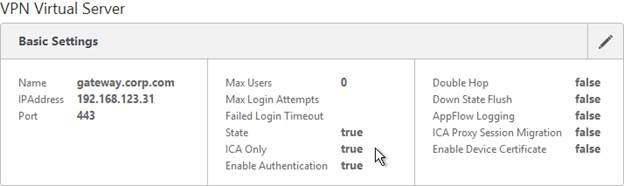
If you don't need any non-ICA Proxy features, then you don't need any Gateway Universal licenses, and you can skip to the next section.
The Gateway Universal licenses are allocated to the case sensitive hostname of each appliance. If you have an HA pair, and if each node has a different hostname, allocate the Gateway Universal licenses to the first hostname, and then reallocate the same licenses to the other hostname.
To see the hostname, click the version info on the top right.
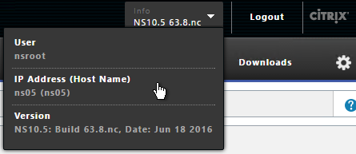
To change the hostname, click the gear icon on the top right.
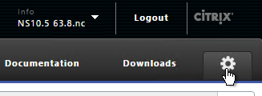
To upload the allocated Gateway Universal licenses to the appliance, go to System > Licenses. A reboot is required.
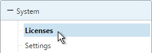
After NetScaler Gateway Universal licenses are installed on the appliance, they won’t necessarily be available for usage until you make a configuration change as detailed below:
- On the left, expand System, and click Licenses.
- On the right, in the Maximum NetScaler Gateway Users Allowed field is the number of licensed users for NetScaler Gateway Virtual Servers that are not set to ICA Only.
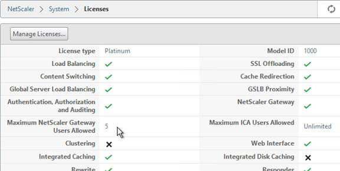
- On the left, under NetScaler Gateway, click Global Settings.
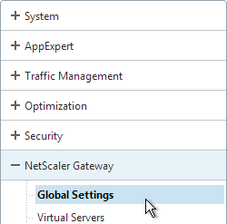
- In the right column of the right pane, click Change authentication AAA settings.
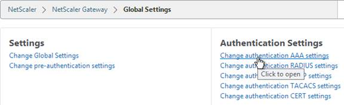
- Change the Maximum Number of Users to your licensed limit. This field has a default value of 5, and administrators frequently forget to change it thus only allowing 5 users to connect.
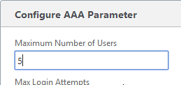
-
If desired, check the box for Enable Enhanced Authentication Feedback. Click OK.
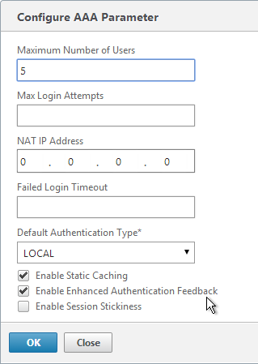
-
Then edit the NetScaler Gateway Virtual Server. On the top-right is the Max Users. Change it to the number of licensed NetScaler Gateway users.
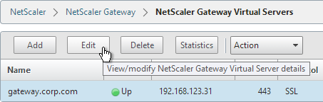
- In the Basic Settings section, click the pencil icon near the top right.
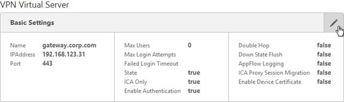
- Click More.
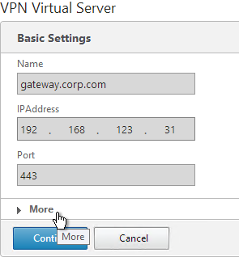
- In the Max Users field, either enter 0 (for unlimited/maximum) or enter a number that is equal or less than the number of licensed users. Click OK.
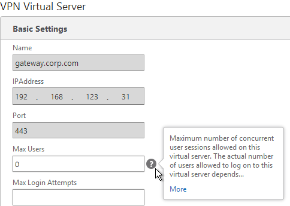
Create Gateway Virtual Server
- Create a certificate for the NetScaler Gateway Virtual Server. The certificate must match the name users will use to access the Gateway. For email discovery in Citrix Receiver, the certificate must have subject alternative names (SAN) for discoverReceiver.email.suffix (use your email suffix domain name). If you have multiple email domains then you’ll need a SAN for each one.
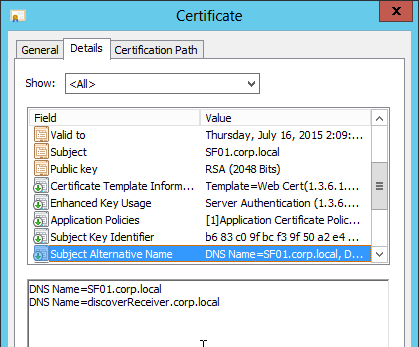
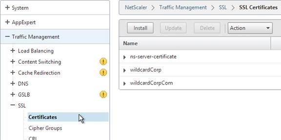
- On the left, right-click NetScaler Gateway and click Enable Feature.
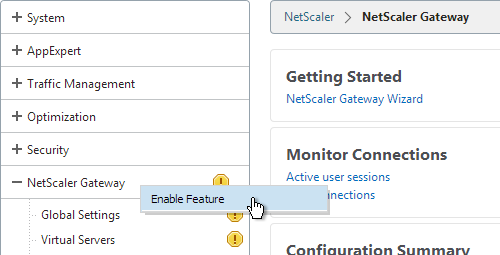
- On the left, expand NetScaler Gateway and click Virtual Servers.
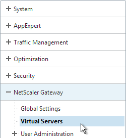
- On the right, click Add.
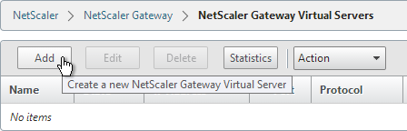
- Name it gateway.corp.com or similar.
- Enter a new VIP that will be exposed to the Internet.
- Click More.
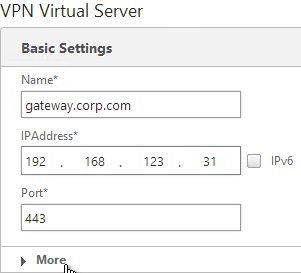
- In the Max Users field enter 0.
- In the Max Login Attempts field, enter your desired number. Then enter a timeout in the Failed Login Timeout field.
- Check the box next to ICA Only, and click Continue. This option disables SmartAccess and VPN features but does not require any additional licenses.
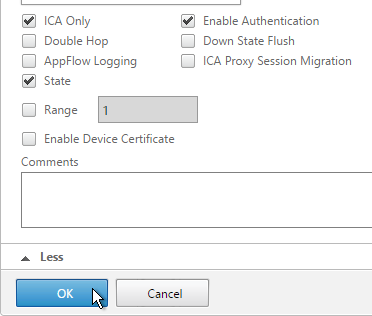
- In the Certificates section, click where it says No Server Certificate.
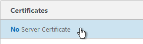
- Click the arrow next to Click to select.
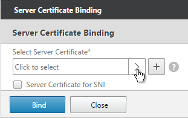
- Select a previously created certificate that matches the NetScaler Gateway DNS name, and click OK.
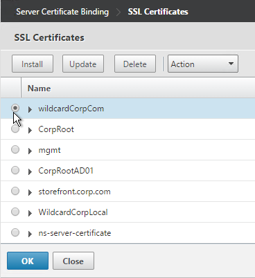
- Click Bind.
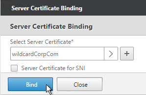
- Click OK.
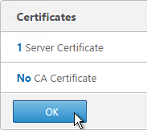
- In the Authentication section, click the plus icon in the top right.
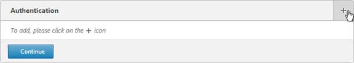
- Select LDAP, select Primary and click Continue.
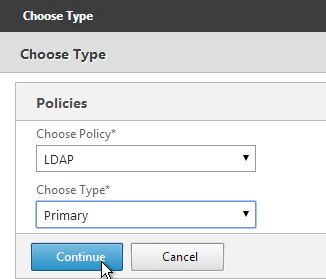
- Click the arrow next to Click to select.
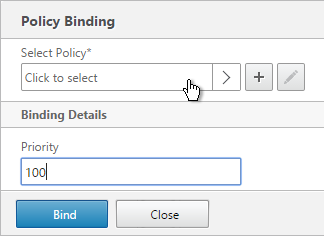
- Select a previously created LDAP policy and click OK.
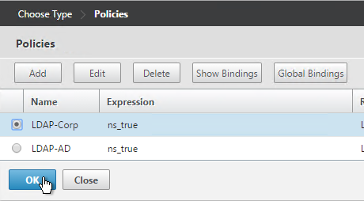
- Click Bind.
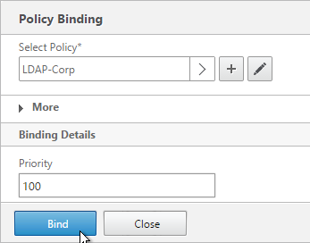
- Or for two-factor authentication, you will need to bind two policies to Primary and two polices to Secondary:
- Primary = LDAP for Browsers (User-Agent does not contain CitrixReceiver)
- Primary = RADIUS for Receiver Self-Service (User-Agent contains CitrixReceiver)
- Secondary = RADIUS for Browsers (User-Agent does not contain CitrixReceiver)
- Secondary = LDAP for Receiver Self-Service (User-Agent contains CitrixReceiver)
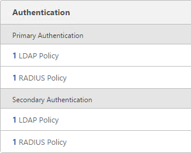
- Click Continue.
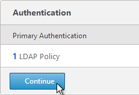
- In the Policies section, click the plus icon near the top right.
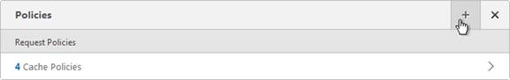
- Select Session, select Request and click Continue.
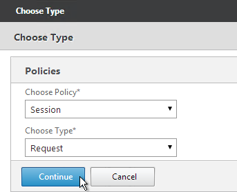
- Click the arrow next to Click to select.
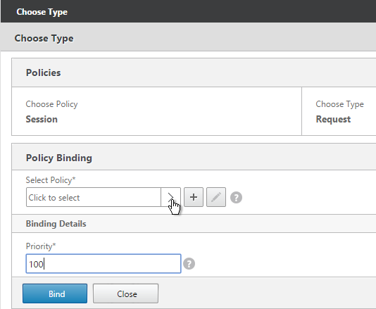
- Select one of the Receiver session policies and click OK.
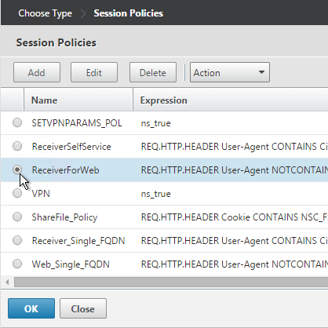
- There’s no need to change the priority number. Click Bind.
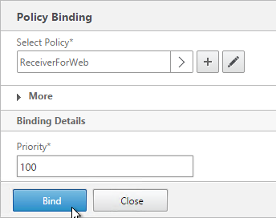
- Repeat these steps to bind the second policy. In the Policies section, click the plus icon near the top right.
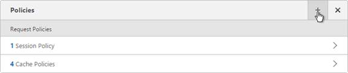
- Select Session, select Request and click Continue.
- Click Add Binding.
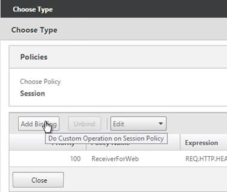
- Click the arrow next to Click to select.
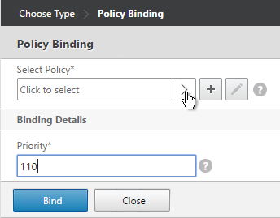
- Select the other Receiver session policy and click OK.
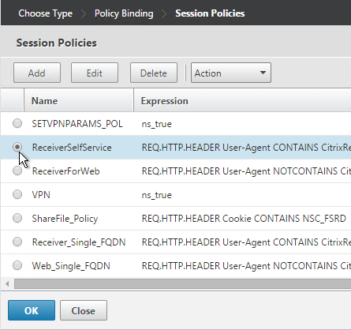
- There’s no need to change the priority number. Click Bind.
- The two policies are mutually exclusive so there’s no need to adjust priority. Click Close.
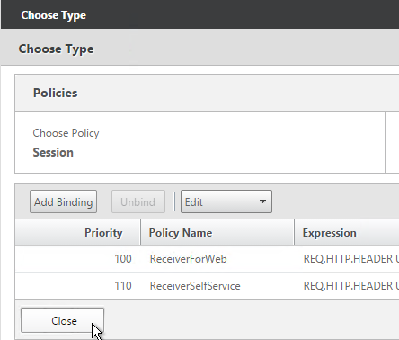
- On the right, in the Advanced section, click Profiles.
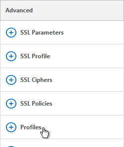
- In the TCP Profile drop-down, select nstcp_default_XA_XD_profile. This improves NetScaler Gateway performance. Click OK.
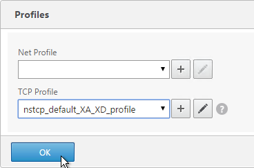
- On the right, in the Advanced section, click Published Applications.
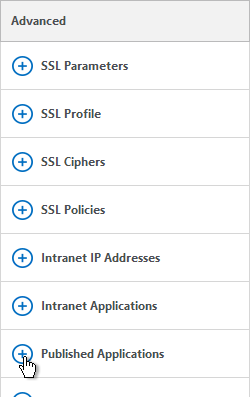
- Click where it says No STA Server.
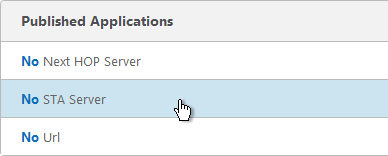
- Add a Controller in the https://
- For the Address Type, select IPV4. Click Bind.
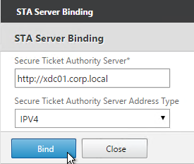
- To bind another Secure Ticket Authority server, on the left, in the Published Applications section, click where it says 1 STA Server.
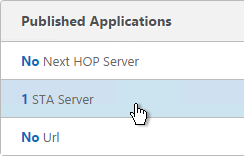
- Click Add Binding. Enter the URL for the second controller.
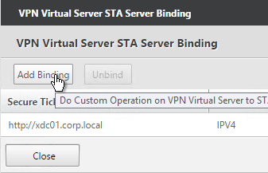
- The State is probably down. Click Close.
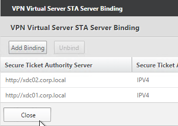
- In the Published Applications section, click STA Server.
-
Now they should be up and there should be an Auth ID. Click OK.
add vpn vserver gateway.corp.com SSL 10.2.2.200 443 -icaOnly ON -tcpProfileName nstcp_default_XA_XD_profile bind vpn vserver gateway.corp.com -policy "Receiver Self-Service" -priority 100 bind vpn vserver gateway.corp.com -policy "Receiver for Web" -priority 110 bind vpn vserver gateway.corp.com -policy Corp-Gateway -priority 100 bind vpn vserver gateway.corp.com -staServer "http://xdc01.corp.local" bind vpn vserver gateway.corp.com -staServer "http://xdc02.corp.local" -
Perform other normal SSL configuration including: disable SSLv3, bind a Modern Cipher Group, and enable Strict Transport Security.
bind ssl vserver MyvServer -certkeyName MyCert set ssl vserver MyvServer -ssl3 DISABLED -tls11 ENABLED -tls12 ENABLED unbind ssl vserver MyvServer -cipherName ALL bind ssl vserver MyvServer -cipherName Modern bind ssl vserver MyvServer -eccCurveName ALL bind vpn vserver MyvServer -policy insert_STS_header -priority 100 -gotoPriorityExpression END -type RESPONSE -
Scroll down and click Done.
Verify SSL Settings
After you’ve created the Gateway Virtual Server, run the following tests:
- Citrix CTX200890 – Error: "1110" When Launching Desktop and "SSL Error" While Launching an Application Through NetScaler Gateway: You can use OpenSSL to verify the certificate. Run the command:
openssl s_client -connect gateway.corp.com:443. Replace the FQDN with your FQDN. OpenSSL is installed on the NetScaler or you can download and install it on any machine. - Go to https://www.ssllabs.com/ssltest/ and check the security settings of the website. Citrix Blogs - Scoring an A+ at SSLlabs.com with Citrix NetScaler – 2016 update
Gateway UI Theme
- Ensure NetScaler is able to resolve the FQDN of the StoreFront server. You can add an Address record to the NetScaler or ensure that NetScaler can resolve DNS. http://support.citrix.com/article/CTX135023
- On the left, under NetScaler Gateway, click Global Settings.
- In the right pane, in the left column, click Change Global Settings.
-
Change the selection for UI Theme to Green Bubble, and click OK.
-
If you want the NetScaler Gateway Logon Page to look like StoreFront 3.0 then see StoreFront Tweaks > Theme for NetScaler 10.5.
SSL Redirect
Use one of the following procedures to configure a redirect from http to https. Responder method is preferred.
Public DNS SRV Records
For email-based discovery, add a SRV record to each public email suffix DNS zone. Here are sample instructions for a Windows DNS server:
- On the Server Manager, click Tools > DNS Manager
- In the left pane of DNS Manager, select your DNS domain in the forward or reverse lookup zones. Right-click the domain and select Other New Records.
- In the Resource Record Type dialog box, select Service Location (SRV) and then click Create Record.
- In the New Resource Record dialog box, click in the Service box and enter the host value _citrixreceiver.
- Click in the Protocol box and enter the value _tcp.
- In the Port number box, enter 443.
- In the Host offering this service box, specify the fully qualified domain name (FQDN) for your NetScaler Gateway vServer in the form servername.domain (e.g. gateway.company.com)
Block Citrix VPN for iOS
Citrix CTX201129 Configuration for Controlled Access to Different VPN Plugin Through NetScaler Gateway for XenMobile Deployments: do one or both of the following:
- Create an AppExpert > Responder > Policy with Action = DROP and Expression =
HTTP.REQ.HEADER("User-Agent").CONTAINS("CitrixReceiver/NSGiOSplugin"). Either bind the Responder Policy Globally or bind it to the Gateway vServers. - In your Gateway Session Policies, on the Client Experience tab, do not set the Plugin type to Windows/Mac OS X. If any of them are set to Windows/MAC OS X, then VPN for iOS is allowed.
View ICA Sessions
To view active ICA sessions, click the NetScaler Gateway node on the left, and then click ICA Connections on the right.
Customize Logon Page
The logon page presented by NetScaler Gateway can be easily customized by modifying the .html, .css, .js, and .jpg files located under /netscaler/ns_gui/vpn.
After customizing the logon page, if you are licensed for Integrated Caching, then you’ll probably need to invalidate the loginstaticobjects Integrated Caching Content Group.
When you reboot the appliance, all customizations will be lost unless you automatically reapply the customizations after a reboot. There are two methods of doing this:
- Place the modified files under /var and add cp commands to /nsconfig/rc.netscaler so the files are copied after a reboot.
- Create a customtheme.tar.gz file and set the Gateway theme to Custom.
rc.netscaler Method
Let's say you customized the en.xml and login.js files. To reapply those customizations after a reboot, copy the two modified files to /var. Then edit the file /nsconfig/rc.netscaler and add the following two commands:
cp /var/en.xml /netscaler/ns_gui/vpn/resources/en.xml
cp /var/login.js /netscaler/ns_gui/vpn/login.js
Custom Theme Method
From http://forums.citrix.com/thread.jspa?threadID=332888:
- Change setting to Green Bubble (if you want to use it), make customizations.
- SSH to the device, type
shell. - Create ns_gui_custom folder by typing:
mkdir /var/ns_gui_custom - Change directory to /netscaler by typing:
cd /netscaler - Archive the ns_gui folder:
tar -cvzf /var/ns_gui_custom/customtheme.tar.gz ns_gui/* - Change theme to 'custom'. You can do this from NetScaler Gateway > Global Settings > Change Global Settings or from a Session Policy/profile. It's located on the bottom of the Client Experience tab.
- Save the config.
- Reboot appliance to make sure the customizations are reapplied.
- Repeat this on the second appliance.
Note: if you enabled the Custom theme, since the customtheme.tar.gz file contains the admin GUI, you will have difficulty logging into the admin GUI whenever you upgrade the appliance firmware. You cannot use your customtheme.tar.gz file with newer firmware versions. When upgrading firmware, do the following:
- Change the theme to Default or Green Bubble and save the config.
- Upgrade the firmware.
- If the admin GUI is not working, change the theme to Default or Green Bubble again.
- Manually reapply your customizations.
- Re-create the customtheme.tar.gz file. Don't use the file that was created on the previous firmware version.
Logon Page Labels
When two factor authentication is configured on NetScaler Gateway, the user is prompted for User name, Password 1, and Password 2.
The Password 1 and Password 2 field labels can be changed to something more descriptive, such as Active Directory or RSA:
To change the labels, edit a couple files:
- Edit the file /netscaler/ns_gui/vpn/resources/en.xml. Search for “Password”. The Password2 field has a colon but the Password field does not.
- Also edit the file /netscaler/ns_gui/vpn/login.js. Scroll down to the ns_showpwd_default() and ns_showpwd_greenbubble() functions. Find the line
if ( pwc == 2 ) { document.write(' 1'); }and comment it out by adding two//to the beginning of the line. You will find this line in both functions. This prevents NetScaler Gateway from adding a “1” to “Password 1”. - Use one of the above procedures to reapply the customization after a reboot.
Domain Drop-down
Citrix CTX118657 How to Add Drop-down Menu with Domain Names on Logon Page for Access Gateway Enterprise Edition has instructions for creating a drop-down list with domain names. The Create the drop-down menu section has instructions for the Default Caxton theme, but not Green Bubbles. Here is a one way of making it work in the Green Bubbles theme:
<div class="field buttons"><div class="left"><label for="domain" class ="label plain"><span id="domain">Domain:<span></div>
<div class="right"><select name="domainvalue" size="1" style="width: 100px;"> <option value="DOMAIN1">DOMAIN1</option> <option value="DOMAIN2">DOMAIN2</option> </select></div></div>
Everything else in the article still pertains to the Green Bubbles theme.
Logon Security Message (Disclaimer)
/netscaler/ns_gui/vpn/resources/en.xml can be edited to display a logon message. Look for Please log on and replace it with your desired text. After changing the file, make sure you follow one of the above procedures to reapply the customization after a reboot.
http://euc.consulting/blog/customizing-citrix-access-gateway/ has additional instructions for creating a disclaimer. These instructions are for the default Caxton theme. Here is one method of adjusting them for the Green Bubble theme:
- Edit the file /netscaler/ns_gui/vpn/index.html.
- Find line 94 which has
<input type="submit" id="Log_On" - Inside the element, add the attributes
name="LogonButton" disabled="true" -
Immediately below that line, add the following lines. They go before the tag.
-
Save and close the index.html file.
- Edit the file /netscaler/ns_gui/vpn/login.js
-
At the bottom of the file, add in the following function:
-
Save and close the login.js file.
- Use one of the above procedures to reapply these customizations after a reboot.
- When you connect to the logon page, you should see a checkbox. The Log On button will only be enabled if the checkbox is checked.
Other Customizations
If you want the NetScaler Gateway Logon Page to look like StoreFront 3.0 then see StoreFront Tweaks > Theme for NetScaler 10.5.
Jason Samuel - How to force users to use the Citrix Receiver app on mobile devices using NetScaler: You can tell your users to install Citrix Receiver on their mobile devices, yet they still continue to open Receiver for Web in a mobile browser to launch their apps and desktops because that’s what they do on their PCs at work. It’s tough to get them to understand there are 2 ways to access their apps while on a PC, using the Citrix Receiver OR Receiver for Web in their browser. But on a mobile device, they should use Citrix Receiver only for the best possible touch friendly experience.
First, we need to detect if a user is using a mobile device or not. Then we need to detect if they are hitting the NetScaler Gateway page using a mobile browser or the Citrix Receiver app. If they are using the app, let the traffic go through normal. But if using a mobile browser, redirect them to a notification page letting them know they need to use the Citrix Receiver app and make it easy for them to install and use it. Implementation instructions at the blog post.
Multiple Gateway Virtual Servers
Citrix Knowledgebase article – How to Create a Specific Customized Logon Page for Each VPN vServer Hosted on the Access Gateway Enterprise Edition and Redirect Users Based on Each Fully Qualified Domain Name
From Citrix Discussions: The KB article referenced above uses the NetScaler's Responder feature. If you are not licensed for the Responder (or just don't want to bother with it), here is another option...
After creating a separate, customized login page for each vServer, I simply add a bit of JavaScript in index.html to call the correct login page, based on the URL of each vServer:
var currentURL = location.host.toLowerCase(); if (currentURL == "url1.domain.com") top.location = "url1.html"; else if (currentURL == "url2.domain.com") top.location = "url2.html"; .... etc...
Citrix Blog Post – Two factor authentication with specific customized NetScaler Gateway logon pages:
- Cookie for second password field is not set properly for custom logon pages. Use rewrite policy to fix it.
- Cache policy won’t allow two-factor cookie to work. Edit cache policy to not cache the custom logon pages.